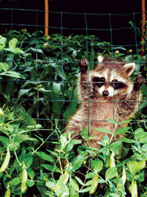
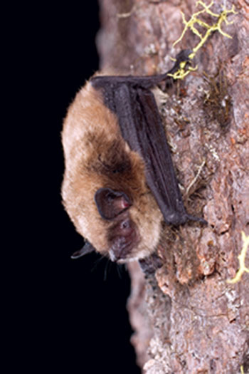
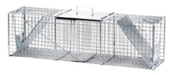
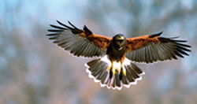
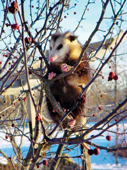
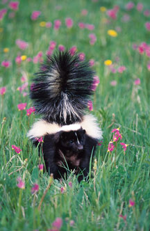
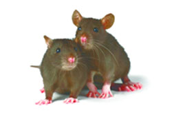

I am pretty much a country person. Not like on a 40-acre homestead down a dirt road 10 miles from town, but on a half-acre homestead in a community of a few thousand people, adjacent to a national park. Our town and its environs are an interface between paved civilization and the countryside. I built a home here in the early ’70s, and I’ve been reflecting lately on all the critters who’ve shared our homestead with us. I enjoy wildlife as much as the next guy, but like many things, only in moderation.
All around our place, fencing, netting, chicken wire, traps, potions and tools are part and parcel of living on a piece of land on the edge of wilderness. We have to deter critters that want to eat our garden, kill our chickens, nest in the woodpile, burrow into our rafters, eat food in the pantry - you get the idea.
We’ve lived in northern California for 35 years, and we have many of the same animals found across the continent: rats, mice, skunks, raccoons, foxes, possums, bats, ants, termites, gophers, moles, hawks and others. They’re tolerable until they begin to pillage and destroy, and then we have to take action. In this ongoing dance, here are some effective methods for dealing with the invaders.
Oh yes! They have been part of the human equation from time immemorial and are survivors par excellence. (If we humans succeed in eliminating life on Earth, there’ll still be rats and cockroaches.) Rodents are immensely clever and adaptable, amazing in their ability to delicately remove food from a trap without springing it. We have chickens, with their feed spread on the ground, so rats relentlessly patrol the chicken coop and yard.
Maybe two or three times a year mice get into the pantry, where they’ll chew open packages of nuts or grains and leave tell-tale pellets.
I use standard traps, never poison; it makes an animal die from internal bleeding - cruel and unusual punishment. I generally have three to five traps set, either on vertical walls or horizontal passages (after a while you figure out their routes).
For rats, I screw the trap down. The key is to tie the bait to the trigger. If you just smear peanut butter on the trap, they’ll outwit you - you need to entice them to push the trigger down. Often, I’ll put peanut butter in a rolled-up piece of plastic, with punched holes so the peanut butter oozes out. Then I tie this to the trap with two twist-ties or a rubber band.
Lately, I’ve been using an almond or a pecan for bait, which are simpler. A friend rubs peanut butter on a small piece of paper towel, and ties that down.
Using these methods, I trap 30 to 40 rats a year. The same technique works for mice, only I don’t screw the traps down. I use a nut tied to the trigger and it works like a charm.
My neighbor, a knowledgeable botanist, swears by the Blackhole Rodent Trap, which its manufacturer claims is the No. 1 selling gopher trap in the United States. (Click here for a great pictorial selection of gopher traps.)
I use Macabee traps, the old-fashioned, hard-to-set type. When we see a lettuce or artichoke plant disappear, I gingerly dig around with a shovel to find the gopher’s tunnel(s). I put on light cloth gloves in an attempt to mask my scent and dig back into the tunnel with a trowel. I set the trap, gingerly push it into the tunnel (pincers of trap facing gopher direction), then put some lettuce or other vegetable behind the trap so they’ll get nailed if they come after it. I then push dirt in to cover up the tunnel.
I have a string attached to the trap, tied to a wooden stake, and driven into the ground. I leave the string loose on the ground; when it’s pulled taut, I know I’ve got a gopher. If you don’t do this, they’ll occasionally retreat to unreachable subterranean depths and you’ll never find the trap. An even better method is to find a main tunnel and set traps going in both directions.
We had bats in our belfry. We sleep in the second story of a three-story tower, and bats were living in infinitesimally small cracks in the third-story ceiling and then occasionally swooping down into our bedroom, looking for a way out. We’d wake up to the swish of wings, I’d open the windows, and a bat would swoop out into the night. This was terrifying for my wife, who one night had a bat drop onto her neck in bed. Shades of Dracula! Damsel in distress!
Our tower is covered with hand-split shakes, so there are small crevices under the eaves. I found every crack I could and covered it with quarter-inch mesh. They still got in, so I got some industrial grade foam and shot it into every inside and outside crack I could find. Finally, after several years of intermittent bat encounters, they were gone altogether.
Don’t get me wrong, I’m an admirer of bats. They’re beautifully designed, with elegant membrane-webbed wings. They use a type of sonar called echolocation, bouncing signals off objects in front of them, enabling them to fly in the dark. Plus, they eat tons of insects. But they can get through unbelievably small spaces. If you can poke a pencil through a crack, don’t be surprised if a bat can wiggle through.
For more information on bats, including do-it-yourself bat exclusion techniques, a nationwide listing of professional “bat excluders,” or simply how to live in harmony with them, visit Bat Conservation International.
I only trap them if they persist in blasting our environs - most of them I’m happy to have around. But when the need arises, be careful. Skunks can make your life miserable.
I use a #1050 Havahart Large Raccoon trap #3A. There are 10 different sizes of Havahart traps; you’ll find them online at the Havahart website, and at most lawn and garden stores. Again, I tie the bait to the trigger inside the trap.
When you get a skunk, throw a blanket or tarp over the trap while you plan what to do; the darkness will quiet the skunk down. A friend of mine loads the traps into the back of his pickup truck and releases them four miles out in the countryside. I have a camping shell and gear in my truck and I’m not about to risk getting it all skunked. So I put a tarp over the trap, and move it in a wheelbarrow to a pre-dug grave. I take the tarp off, dispose of the skunks using a 0.22-caliber rifle, roll them into the grave, cover them with dirt and high-tail it for the shower.
Note that a skunk has to raise its tail to spray, so keep the tail down if at all possible. If you get skunked: A popular method for neutralizing skunk spray is to scrub yourself with a mixture of 1 quart hydrogen peroxide, one-third cup baking soda and 1 tablespoon liquid soap. Leave it on for a minute, then wash it off.
The only time I’ve gone after possums was when a bunch of them began to defecate all over my lumber storage area. They’re quite easy to trap. I caught 13 of them in one month, in the same Havahart trap I use for skunks, took them a few miles away and released them. Possums will sometimes bare their teeth, hiss or even growl, appearing to be fierce, but they will seldom fight and are rarely aggressive.
Playing possum: One night when I was closing in the chickens, I spotted a baby possum. As soon as it saw me, it rolled over on its side, closed its eyes and lay still, with occasional peeks to see if I’d gone away. It made me laugh out loud.
We can generally coexist with raccoons. You never want to have your dogs take one on, though, because you’ll end up with an eviscerated canine. Raccoons are ferocious fighters, and clever, too. Years ago, one of them pulled the recirculating pump out of our fishpond, which drained it, and proceeded to feast on the stranded fat carp.
The one raccoon I trapped had climbed in the studio window and left messy paw prints all over my desk. I also put quarter-inch mesh or chicken wire about a foot down in the ground all around the chicken coop so raccoons and skunks can’t tunnel into their yard at night.
A young red-shouldered hawk was picking off our chickens, so we stretched bird netting over their yard, which worked perfectly.
They are the rats of the insect world. Persistent. Voracious. Because I refuse to use poisons, I’ve tried a bunch of nontoxic techniques. It’s here that I’ve failed in the do-it-yourself department.
Methyl bromide was formerly used for serious infestations. It’s a poison that was banned following human fatalities. These days, they’re still using poisonous gas in the form of sulfuryl fluoride (Vikane). How can you blanket a home’s interior with poisonous gas and assume that all residue will be gone when you return?
I had the Electro-Gun treatment performed, which sends electrical current through the wood and zaps any moisture-containing insects. It has to be done every few years and is similar in cost to fumigation, but it’s better than poison. Read more about this technique through Ecola Termite Services, Inc.
For more information about controlling insects (including ants) with a minimum of toxicity, visit Pesticide Watch.
In these never-ending battles, I’ve come to realize that our stay on the land is temporary at best. We’re just fending off the natural forces for a while; when we’re gone, they’ll take over.
If you have other methods of dealing with these critters, please post a comment below. A lot of us are in the same boat, and new ideas are always welcome.
Rats breed at three to four months of age, and can produce up to seven litters a year, each containing 10 to 20 babies. It is said that there are as many rats in the United States as humans. More than 1,000 rats per acre were reported on one Iowa farm, and one rat can eat about 50 pounds of grain a year.
Country rats are a lot different from city rats. The former have a pretty good diet and they’re clean little animals for the most part. City rats are another story. I’ve seen skuzzy yellow-fanged rats scurrying around on the sidewalks and vacant lots in New York City that gave me nightmares.
Wood rats (also known as pack rats) build conical 3-foot-high, 3-foot-diameter structures (twig high-rises), always in a dense part of the woods away from paths or roads. In many cultures, this type of rat is enjoyed as food.
A skunk can shoot its spray as far as 12 feet, and it is said that it will aim for another animal’s eyes.
Skunks have poor eyesight. If you’re sitting in the garden or standing still in the woods and a skunk comes ambling along, they may come quite close without bothering you. Just don’t make any sudden moves.
The possum is the only marsupial (same family as a kangaroo) in North America. A female possum gives birth, only 13 days after mating, to about a dozen babies that are smaller than the tip of your little finger.
Many people consider possums to be dirty animals, but in fact they are exceptionally clean. They groom and bathe meticulously, and sometimes will stop in the middle of eating to clean themselves several times before finishing. Roast possum is considered a delicacy in many parts of the United States.
|
 DWIGHT KUHN Raccoons are cute little fellas, but they also are cunning omnivores that can do damage to your garden as well as your poultry flock. |
 MICHAEL DURHAM Seal even the tiniest of cracks to keep bats our of your home. |
 HAVAHART A live trap large enough for a full-size raccoon will help you manage a range of bothersome critters on your land. |
|
 TOM VEZO Take the steps necessary to protect your flock of chickens from predators, such as hawks. There may be stiff fines for shooting endangered species. |
 DAVE KUHN/DWIGHT KUHN PHOTOGRAPHY Possums look fierce but are rarely aggressive, preferring to play dead than fight. |
 RICHARD DAY/DAYBREAK IMAGERY Beware! skunks have bad eyesight but good aim. |
|
 ISTOCK/OLEG KOZLOV Rats are prolific breeders and can eat about 50 pounds of grain a year. |
|
|